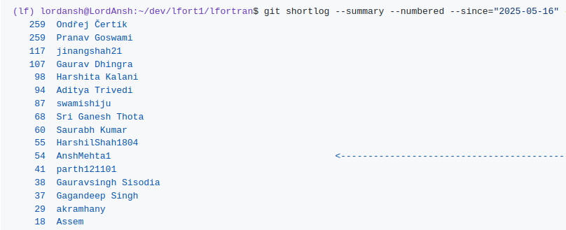

Student : Ansh Mehta
Project : Compiling Stdlib using LFortran
Organization : Fortran-lang
Mentors : Ondřej Čertík, Harshita Kalani
Weekly Blogs : anshmehta1.github.io
Overview of Work Done :-
In my GSoC Journey, I worked on enhancing compatibility of LFortran with the Stdlib Fortran codebase. I started my GSoC journey by working on HashMaps package of Stdlib. It was the second biggest package, after stats, in terms of lines of code, complexity and current failures/errors in LFortran. It took me around 5.5 weeks of GSoC Period to successfully compile all its files and execute all its tests and most examples successfully with workarounds. I also, updated the CI with all the progress to avoid future regression, but all these updation were eventually turned off due to struct refactoring. After this, I shifted my focus towards Submodule Implementation and worked on it for my remaining GSoC Period. LFortran was initally treating Submodules as a regular Module and didn't supported any Implementation details. After detailed investigation on Submodule features and various compilation modes where submodules are to be supported, I designed a correct maintable approach and started working on it. I was able to implement Submodules in Single file and in Separate files with Monolithic Compilation and Separate Compilation. I also, implemented Module Procedures for Submodules. Finally, I worked to robustify this Submodule Implementation by Module Procedures from Stdlib Codebase. Still, work on Submodules in Monolithic Compilation is going on as there are manny bugs which are yet to be handled.
Detailed Description :-
Following is the weekly break down of my work in the complete GSoC Period :-
- Week 1, 2, 3 and 4 : In this period, I concentrated on Test Open Maps of Hashmaps package of Stdlib and was able to successfully compile the test file and execute it correctly.
- Week 5 : I dedicated this week for Test Chaining Maps of Hashmaps package of Stdlib and was able to compile and execute the test file correctly.
- Week 6 : I devoted this week for wrapping up HashMaps package of Stdlib which includes successful compilation of Test Maps and most examples of HashMaps. Also, during this week, I started to work on Submodules, identifying its key requirements.
- Week 7 : In this week, I started implementing submodules, starting with some initial modifications in Module ASR and some initial Implementations.
- Week 8 : This was the week where I implemented Submodules in Single File and also, in Separate Files but with Separate Compilation. Still, Submodules were left to be implemented in Separate files with Monolithic Compilation.
- Week 9, 10 and 11 : In these three weeks, I finally completed Submodule Implementation in Separate Files for Monolithic Compilation. During this period, I also implemented Module Procedures for Submodules and finally, robustified Submodule Implementation for Separate Compilation by reverting Submodule Workarounds and fixing corresponding bugs.
- Week 12 : Completed the work of reverting Submodule Workarounds for Separate Compilation from Stdlib and Updated the CI after reverting these commits to prevent future regression. Also, made significant progress in robustifying Submodule Implementation for Monolithic Compilation.
List of Issues created/closed : lfortran/issues
List of PRs opened / merged / closed : lfortran/pulls
My commits during GSoC:
Current Status :-
Currently most packages of Stdlib are executing correctly are being tested on CI for both Monolithic and Separate Compilations with workarounds. Some packages have been disabled from CI quite recently like HashMaps and Sorting due to some errors which were generated after the two major refactorings (Struct, String). Also, in some packages, small-small details like a few tests or examples are still not working and are yet to be handled. In a nutshell, Stdlib is in quite a good shape after all the collective efforts.
For the case of Submodules, its Implementation is quite robust for Single File and Separate Files with Separate Compilation. Almost all the Submodule workarounds are reverted from Stdlib in Separate Compilation mode and related bugs have been fixed. All the progress is preserved at CI whenever we fix a bug for any compilation mode. Still, Submodule Implementation in Separate Files for Monolithic Compilation is not yet complete. There are still a lot of errors which I will be working on and fixing them with time.
Future Works :-
After the completion of 12 weeks of GSoC period, my primary aim is to robustify Submodule Implementation for Monolithic Compilation. I am currently working on it by reverting Submodule workarounds from Stdlib, creating MREs for generated errors/failures and fixing them one-by-one. I don't think it will a lot of time and I will be able to complete this quite shortly. After this, I am planning to extend my work on Stdlib by compiling remaining packages or fixing bugs, related to stdlib, that are currently open on LFortran github repository.
Learnings :-
I learnt a lot of new things throughout the journey :-
- Earlier, I was only fixing bugs related to features which were already created. I didn't created any new feature or design. It was the GSoC period where I learnt to create new features, its designs and things to keep in mind to make the design robust for all compilation modes and maintable. I was able to do so by working on Submodules in my GSoC period.
- I was the only person working on compilation of HashMaps package of stdlib. This made me responsible and answerable for all the work that I did and hence helped me to gain immense confidence for my future endeavours.
- Also, the project helped me to improve my debugging skills. This would help me in any other programming projects that I may perform in my near future.
- I also pursued another internship simultaneously, hence time management was another very important skill that I learnt here.
Acknowledgments
Overall, I enjoyed the work that I did in my 12 weeks GSoC Period. I would like to thank Ondrej Certik, Harshita Kalani, Pranav Goswami and all the other LFortran members for their reviews and suggestions which helped me a lot to tackle new difficulties in my complete GSoC Journey. I look forward to contribute further with the same excitement and enthusiasm, and to support LFortran in the best possible way.